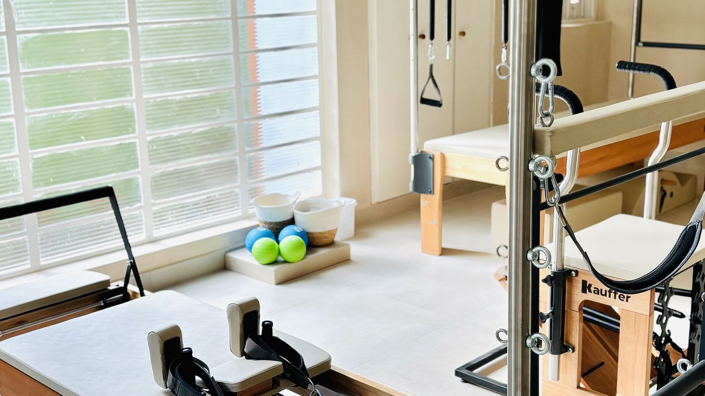

Segurança em primeiro lugar
Profissionais especializadas em cuidado pré e pós-natal, com protocolos atualizados e atenção individual.
Um cuidado feito para você e para o seu bebê. Aulas individualizadas, seguras e acolhedoras, que respeitam cada fase da sua gestação.
Inicie sempre com a liberação do seu médico.
Avaliação inicial da gestante: R$ 150, presencial e completa, com anamnese e testes. Você recebe a análise em PDF e o valor é abatido no plano.

Aqui, cuidamos de duas vidas. Cada detalhe é pensado para o seu conforto e tranquilidade.
Profissionais especializadas em cuidado pré e pós-natal, com protocolos atualizados e atenção individual.
Um ambiente sereno e humano, onde você é ouvida e cuidada com carinho em cada encontro.
Cada trimestre tem suas necessidades. Adaptamos o plano respeitando o seu corpo e o seu tempo.
Com acompanhamento de fisioterapeuta especializada em cuidado pré-natal, o Pilates na gestação pode contribuir para o seu bem-estar físico e emocional, sempre respeitando cada fase e os limites do seu corpo.
Inicie sempre com a liberação do seu médico.
Cada gestação tem o seu tempo. Sua aula muda com você, sempre com liberação do seu obstetra e avaliação individual antes de começar.
Respiração, consciência corporal e ajustes leves, respeitando enjoos e o cansaço que podem aparecer nessa fase.
Fase em que muitas gestantes se sentem mais dispostas. Trabalhamos força e mobilidade, adaptando os exercícios ao crescimento da barriga.
Posições e intensidade ajustadas, com foco em alívio de desconfortos e alongamentos que trazem mais conforto na reta final.
Pilates, fisioterapia pélvica e terapias manuais em conjunto, com uma equipe dedicada a acompanhar você do início ao pós-parto.

Tudo começa com uma conversa e uma avaliação individual. A partir dela, montamos um plano só seu.
Conte um pouco sobre o seu momento e tire suas primeiras dúvidas.
Entendemos seu histórico e necessidades com calma e atenção.
Criamos um plano adaptado à sua fase, com acompanhamento contínuo.
Você evolui com segurança, do pré-natal ao pós-parto.
Com acompanhamento adequado e profissional especializado, o Pilates pode ser uma prática segura na gestação. Na Fiore, cada aula é individualizada e adaptada à sua fase. Inicie sempre com a liberação do seu médico.
O momento ideal varia para cada mulher. Atendemos do início da gestação ao pós-parto, sempre com liberação médica e acompanhamento especializado.
Com acompanhamento adequado, o Pilates pode contribuir para o alívio de desconfortos, consciência corporal, respiração e preparação para o parto, respeitando cada fase.
Não precisa. Muitas alunas começam sem nunca ter feito Pilates. Tudo parte da avaliação inicial, que monta um plano no seu ritmo.
Não trabalhamos com aula experimental. A sua experiência começa na avaliação inicial, um encontro individual para te conhecer e desenhar o seu plano.
Pode, com a liberação do seu médico. Adaptamos os exercícios a cada trimestre, respeitando o seu momento.
Sim. Pedimos a liberação do seu médico antes de começar e trabalhamos sempre em diálogo com ele.
A avaliação inicial da gestante custa R$ 150, com o valor abatido no plano. Os planos são definidos na avaliação, de acordo com a sua fase e a sua rotina.

Movimento, respiração e bem-estar com segurança em cada trimestre, um presente da Fiore para você. Receba o PDF gratuito pelo WhatsApp.

Agende sua avaliação inicial e descubra como o Pilates pode tornar a sua jornada mais leve e segura.